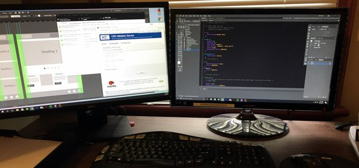

- Randy Layne
- Home
- Experience
- Hobbies

Hello All, I’m Randy.
I call Lynchburg, VA my home.
I call Lynchburg, VA my home.
I’m a 4th generation small business owner who got my programming start when I was seven on a Radio Shack TRS-80. For those of you who have no idea what that is, it was a computer that used a casette tape as a drive. For those who don't know what a cassette is, you are making me feel really old right now. After high school I drifted away from computers for awhile and worked in restaurants for about a decade as well as being a helicopter engine mechanic for the Army Reserves.
Since getting out of restaurants and the Army in 2008, I started a successful janitorial business that has kept me busy. With that business, I have kept up the webpage for it as well as designing a couple of utility programs to help with bidding and other aspects of running a business. It is my desire to share these program ideas with other small business owners that has led me back to my love of computer programming, and thus my interest in earning a Techdegree.
"First master the web, then master the world!"
I want to be able to master all aspects of web development: from design, to front end development, and server side scripting. Oh yeah, let's throw in database development and manipulation as well.
I would like to work as a freelance web developer, creating web sites and applications from the ground up that will not only look good, but will be user friendly and intuitive.
